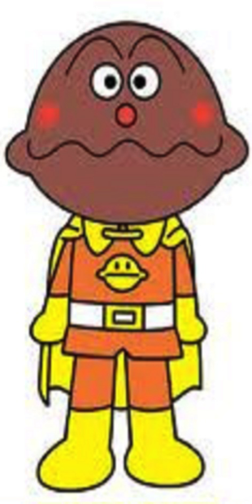

Currypanman
Currypanman (カレーパンマン "Currybreadman") is a major character in the Anpanman series. He is one of Anpanman's allies. He is made from a bun filled with a hot, spicy yellow curry.
Personality
Currypanman is cocky and proud, and loves excitement. He is very self confident and narcissistic, more so than Shokupanman. He is kind and generous, jumping at the chance to feed people his delicious curry, but can often be a bit insensitive to things he finds unimportant.
He believes in a "spicy" way of life, full of taking risks and pushing yourself, which clashes with Shokupanman's beliefs. They often bicker with each other, yet remain close.
Powers Equipment
Curry-punch/Curry-kick: The signature attacks of the main three heroes, both the punch and kick are identical to Shokupanman and Anpanman's. The only slight difference is that Currypanman tends to spin his arm more before he punches, but this is inconsistent, and does not change the result of the punch.
Curry Spit: Currypanman holds spicy curry in his head, which he can spit out to blind opponents, or to even feed people. The more he spits out however the more his head shrinks, until he is powerless.
He has dual pistols in some western-based episodes that he can fill with his curry so shoot with. It has the same effect as just spitting the curry out of his mouth, but looks cooler.